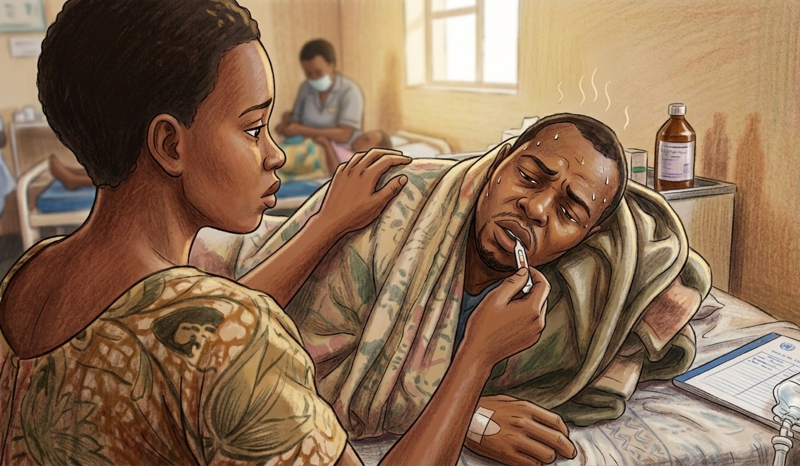
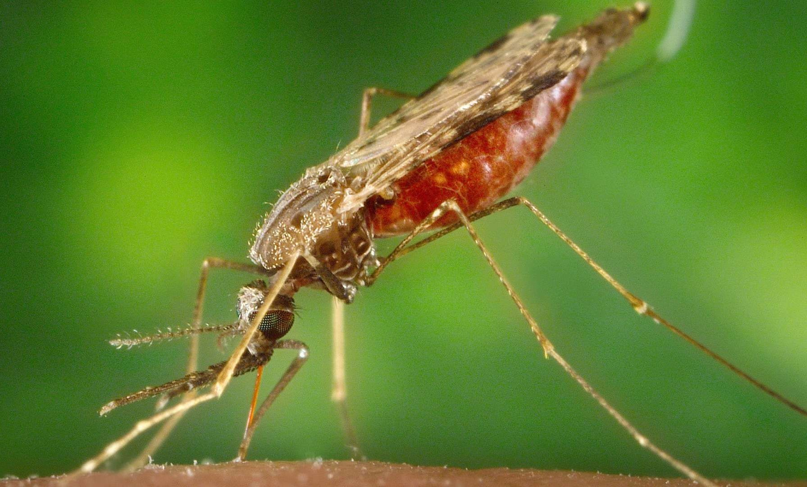
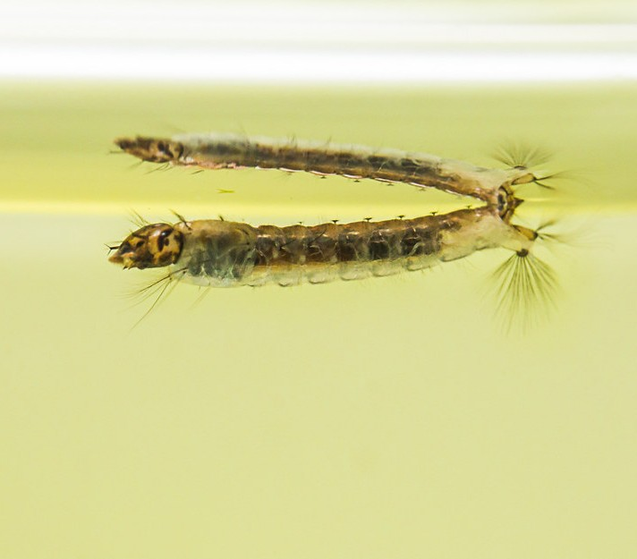
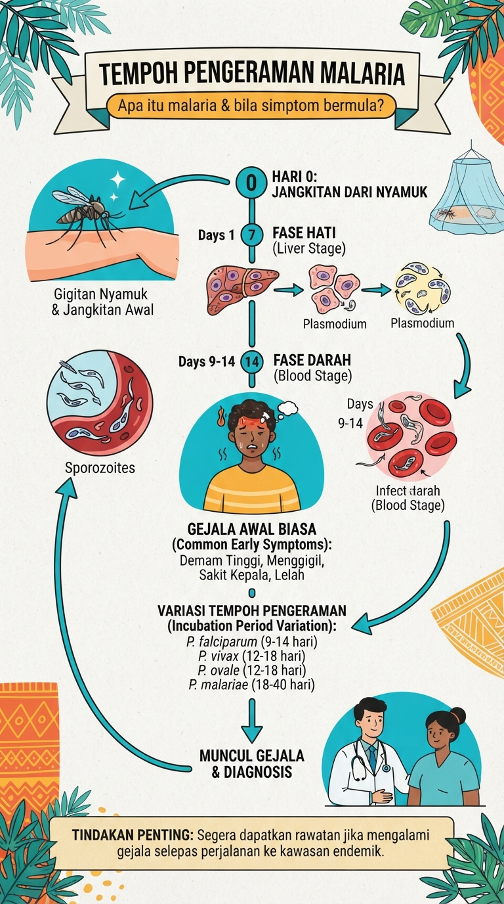

Apa itu Malaria?
Malaria ialah penyakit berjangkit yang disebabkan oleh parasit daripada genus Plasmodium. Penyakit ini biasanya merebak kepada manusia melalui gigitan nyamuk Anopheles betina yang telah dijangkiti parasit malaria. Malaria boleh menjadi penyakit yang serius dan mengancam nyawa jika tidak dikesan serta dirawat dengan segera. Antara spesies parasit yang boleh menjangkiti manusia ialah Plasmodium falciparum, Plasmodium vivax, Plasmodium malariae, Plasmodium ovale dan Plasmodium knowlesi.
Malaria telah diketahui sejak zaman purba dan menjadi salah satu penyakit yang lama mempengaruhi manusia, khususnya di kawasan tropika dan subtropika. Pada 1880, saintis Perancis Alphonse Laveran menemui parasit malaria dalam darah pesakit. Penemuan ini membantu membuktikan bahawa malaria disebabkan oleh parasit.
Kemudian, pada penghujung abad ke-19, saintis menemui peranan nyamuk Anopheles dalam penularan malaria. Penemuan ini menjadi asas kepada usaha moden untuk mengawal penyakit melalui kawalan vektor. Hari ini, malaria boleh dicegah dan dirawat, tetapi masih menjadi masalah kesihatan awam yang penting di banyak negara. WHO menganggarkan sekitar 282 juta kes dan 610,000 kematian akibat malaria pada 2024 di seluruh dunia.
Vektor utama Penyakit Malaria
Vektor utama malaria ialah nyamuk betina daripada genus Anopheles. Tidak semua spesies Anopheles boleh menyebarkan malaria. Daripada kira-kira 430 spesies Anopheles, hanya sekitar 30 – 40 spesies diketahui bertindak sebagai vektor malaria secara semula jadi.
Penting untuk diketahui:
- Nyamuk betina menghisap darah.
- Nyamuk jantan tidak menggigit manusia.
- Nyamuk betina yang telah memperoleh parasit daripada individu yang dijangkiti boleh menjadi pembawa parasit.
- Apabila nyamuk tersebut menggigit orang lain, parasit boleh dipindahkan kepada orang tersebut.
Morfologi Nyamuk Anopheles
Beberapa ciri yang membantu mengenali nyamuk Anopheles:
-
Nyamuk dewasa: Badan kecil hingga sederhana. Kaki panjang dan halus. Sayap mempunyai corak tompok tertentu pada banyak spesies. Apabila hinggap, badannya biasanya
membentuk sudut dengan permukaan, dengan bahagian abdomen terangkat. Palpus maksila nyamuk betina mempunyai panjang yang hampir sama dengan probosis.

- Telur: Diletakkan satu persatu di atas permukaan air. Mempunyai struktur seperti pelampung di sisi. Telur tidak tahan terhadap keadaan kering.
-
Larva: Hidup di dalam air. Berbeza daripada larva Aedes, larva Anopheles biasanya berada selari dengan permukaan air ketika bernafas.
Tiada sifon pernafasan panjang seperti yang terdapat pada larva Aedes.

Cara Jangkitan & Tempoh Pengeraman
-
Bagaimana Ia Berjangkit?
Kitaran jangkitan malaria boleh diringkaskan seperti berikut:
Manusia dijangkiti → nyamuk betina menggigit → parasit masuk ke dalam nyamuk → parasit berkembang → nyamuk menggigit manusia lain → manusia dijangkiti.
Selepas gigitan nyamuk berjangkit:
- Parasit masuk ke dalam badan manusia.
- Parasit menuju ke hati dan membiak.
- Parasit kemudiannya memasuki sel darah merah.
- Parasit membiak dalam sel darah merah dan menyebabkan gejala malaria.
- Sesetengah parasit menjadi bentuk yang boleh diambil oleh nyamuk ketika menghisap darah.
- Parasit berkembang di dalam nyamuk dan akhirnya sampai ke kelenjar air liurnya.
- Nyamuk tersebut boleh menjangkiti manusia lain.
-
Tempoh Pengeraman (Incubation Period)
Tempoh pengeraman ialah tempoh antara gigitan nyamuk yang membawa parasit dengan kemunculan gejala. Secara umum, gejala malaria boleh muncul sekitar 7–30 hari selepas jangkitan, bergantung kepada spesies parasit. WHO menyatakan bahawa dalam individu yang tidak mempunyai imuniti, gejala lazimnya bermula sekitar 10–15 hari selepas gigitan nyamuk berjangkit. Sesetengah parasit seperti P. vivax dan P. ovale boleh mempunyai bentuk dorman dalam hati yang menyebabkan penyakit berulang selepas tempoh yang lebih lama.

Tanda dan Gejala Penyakit Malaria
Gejala awal:
- 🌡️ Demam
- 🥶 Menggigil
- 🤕 Sakit kepala
- 💪 Sakit otot
- 😴 Keletihan
- 🤢 Loya
- 🤮 Muntah
- Cirit-birit bagi sesetengah pesakit
- Kekeliruan atau perubahan tahap kesedaran
- Sawan
- Kesukaran bernafas
- Jaundis
- Air kencing gelap atau berdarah
- Anemia teruk
- Kegagalan organ
Tanda malaria teruk:
Malaria yang tidak dirawat dengan segera boleh menjadi serius. Antara tanda amaran ialah:
Malaria P. falciparum khususnya boleh berkembang menjadi penyakit teruk dengan cepat.
Cara Pencegahan Penyakit Malaria
-
Elakkan gigitan nyamuk:
- Gunakan kelambu, terutama ketika tidur.
- Gunakan penghalau nyamuk yang sesuai.
- Pakai pakaian berlengan panjang dan seluar panjang.
- Gunakan jaring pada tingkap dan pintu.
- Kurangkan pendedahan kepada nyamuk terutama pada waktu nyamuk Anopheles aktif.
-
Kawalan Vektor:
- Kelambu berubat (insecticide-treated nets)
- Semburan racun serangga dalam rumah (Indoor Residual Spray) atau luar rumah (Outdoor Residual Spray).
- Kawalan tempat pembiakan nyamuk mengikut keadaan setempat.
- Semburan racun larva di takungan air (Larvasiding).
- Jika melancong ke kawasan berisiko: Dapatkan nasihat doktor sebelum perjalanan kerana sesetengah kawasan memerlukan ubat pencegahan malaria (chemoprophylaxis). Pemilihan ubat bergantung kepada destinasi dan faktor individu.
Cara Rawatan
Malaria perlu dirawat dengan ubat antimalaria dan tidak sepatutnya dibiarkan tanpa rawatan. Rawatan bergantung kepada:
- Spesies parasit Plasmodium.
- Tahap keterukan penyakit
- Kawasan tempat jangkitan diperoleh
- Corak kerintangan ubat
- Umur dan berat badan
- Kehamilan atau keadaan kesihatan tertentu.
Doktor biasanya akan mengesahkan malaria menggunakan ujian darah, seperti mikroskopi atau ujian diagnostik pantas (RDT). Untuk malaria P. falciparum, terapi kombinasi berasaskan artemisinin (ACT) merupakan rawatan utama yang disyorkan WHO. Rawatan untuk P. vivax dan P. ovale pula mungkin memerlukan rawatan tambahan untuk mencegah penyakit berulang. Jika seseorang mengalami demam selepas berada di kawasan berisiko malaria, pemeriksaan perubatan perlu dibuat dengan segera, kerana rawatan awal dapat mengurangkan risiko penyakit menjadi teruk.
Penyakit Malaria Zoonotik
Malaria zoonotik (juga dikenali sebagai Malaria Monyet) ialah sejenis penyakit berjangkit yang disebabkan oleh parasit malaria yang asalnya merebak dalam kalangan haiwan liar (primata) tetapi kini telah menular kepada manusia.